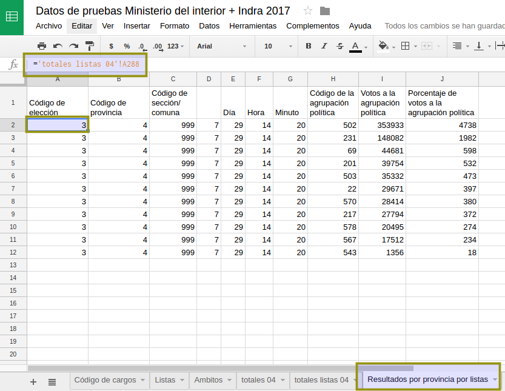

Analizando los datos del ministerio del interior¶
Luego de procesar los datos de la elección es el momento de ordenar estos datos y visualizarlos.
Resultados totales provincia por lista¶
Como primer análisis vamos a ver y ordenar los datos totales por provincia. Para eso en una hoja nueva replicamos (usamos el signo igual y clickeamos en la celda que deseamos replicar aunque esté en otra hoja) la parte de los datos que nos interesan. Los datos de interés son los que tienen el código 999 en la hoja de totales agrupaciones 04.
Es importante replicar igualando las celdas y no copiar y pegar para que cuando actualicemos los datos en la hoja de origen todo lo que hagamos quede actualziado automáticamente.
En un primer paso los datos deben verse así 
Una de las columnas incluye el porcentaje de la agrupación, este número viene sin decimales. Necesitamos hacer una nuestra con la formula que corresponde.
La función es:
=I2/sum(I$2:I$12) * 100
Esa formula puede estirarse para completar hasta el final. Analizar la necesidad de los signos $.
viz-resultado-provincial-por-listas-02
Lo que necesitamos a continuación son los nombres de las agrupaciones. Si bien podemos hacerlo a mano es bueno conectarlo a la lista accesoria con los nombres de las agrupaciones incluidas.
La función VLOOKUP (Vertical Lookup) permite dado un código devolver datos relacionados a ese mismo código en otra tabla. En este caso tenemos el código de la agrupación y en una tabla accesoria dos datos (nombre y descripción) de la agrupación.
La formula para la primera fila.
=VLOOKUP(H2;Listas!A$2:C$461;2)
Nótese nuevamente la necesidad del signo $.
Debe quedar así:
viz-resultado-provincial-por-listas-03
Es necesario ordenar estos datos según la cantidad de votos que irá cambiando durante el día de la elección. Para es útil la función sort.
Debajo de la lista anterior podemos poner la fórmula:
=sort(A2:E12;2;FALSE)
Se generará automáticamente una nueva lista con los datos ordenados. Estos se actualizarán automáticamente cuando los datos cambien.
Con las herramientas usadas para publicar y visualizar planillas es posible publicar en tiempo real esta tabla y un gráfico.
viz-resultados-01
Probar en la lista original de resultados y ver
como se reordena la lista y se actualizan los gráficos.